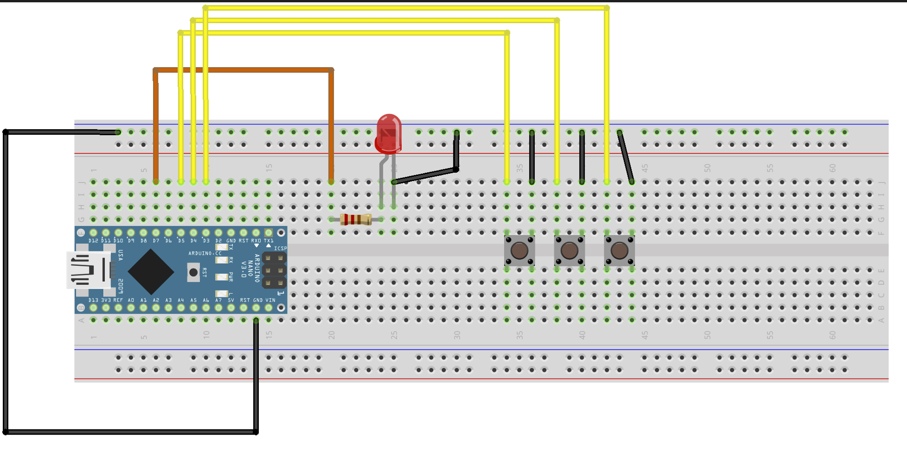

ArduinoのLED点灯プログラム
このArduinoのプログラムは、3つのボタンを使ってLEDを点灯、明るさの調整、消灯を行うものです。
回路図 


プログラムの概要
- ボタン1が押された場合、LEDを点灯させる
- ボタン2が押された場合、LEDの明るさを徐々に上げる
- ボタン3が押された場合、LEDを消灯する
また、各ボタンの状態をシリアルモニタに表示します。
プログラムのコード解説
- 定数宣言
int ledPin = 9; // LEDピン int button1 = 3; // ボタン1ピン int button2 = 4; // ボタン2ピン int button3 = 5; // ボタン3ピン double fadeAmount = 0.001; // 明るさの増減量 ledPinはLEDが接続されているピン番号です。button1からbutton3までの変数に、それぞれボタンが接続されているピン番号を代入します。-
fadeAmountは、明るさの増減量を制御するための定数です。 -
setup()
void setup() { pinMode(ledPin, OUTPUT); // LEDのピンを出力モードに設定 pinMode(button1, INPUT_PULLUP);// ボタン１のピンを入力モードに設定 pinMode(button2, INPUT_PULLUP);// ボタン２のピンを入力モードに設定 pinMode(button3, INPUT_PULLUP);// ボタン３のピンを入力モードに設定 Serial.begin(9600); } pinMode()を使って、各ピンの入出力を設定します。INPUT_PULLUPを使って、ボタンが接続されたピンの内部プルアップ抵抗を有効にします。Serial.begin()でシリアル通信を初期化します。
- loop()
- メインループ。プログラムが実行される間、このループが繰り返されます。
void loop() {
// ボタン1が押された場合、LED光る
if (digitalRead(button1) == LOW) {
digitalWrite(ledPin, HIGH);
}
// ボタン2が押された場合、LEDの明るさを徐々に上げる
if (digitalRead(button2) == LOW) {
for (double i = 0; i <= 255; i += fadeAmount) {
analogWrite(ledPin, i);
}
}
// ボタン3が押された場合、LEDを消す
if (digitalRead(button3) == LOW) {
digitalWrite(ledPin, LOW);
}
// シリアルモニタに各ボタンの状態を表示する
Serial.print("Button 1: ");
Serial.print(digitalRead(button1));
Serial.print(" | Button 2: ");
Serial.print(digitalRead(button2));
Serial.print(" | Button 3: ");
Serial.print(digitalRead(button3));
}
void loop() {
// ボタン1が押された場合、LED光る
if (digitalRead(button1) == LOW) {
digitalWrite(ledPin, HIGH);
}
// ボタン2が押された場合、LEDの明るさを徐々に上げる
if (digitalRead(button2) == LOW) {
for (double i = 0; i <= 255; i += fadeAmount) {
analogWrite(ledPin, i);
}
}
// ボタン3が押された場合、LEDを消す
if (digitalRead(button3) == LOW) {
digitalWrite(ledPin, LOW);
}
// シリアルモニタに各ボタンの状態を表示する
Serial.print("Button 1: ");
Serial.print(digitalRead(button1));
Serial.print(" | Button 2: ");
Serial.print(digitalRead(button2));
Serial.print(" | Button 3: ");
Serial.print(digitalRead(button3));
}
中身の解説
if (digitalRead(button1) == LOW) {
digitalWrite(ledPin, HIGH);
}
digitalRead()関数は、指定されたピンの状態を読み取り、HIGHまたはLOWの値を返します。
この場合、button1ピンがLOWになった場合（つまり、押された場合）、LEDが点灯するように、digitalWrite()関数を使用してledPinをHIGHに設定しています。
ボタン３の処理はこれの反対でledPinをLOWに設定しています。
if (digitalRead(button2) == LOW) {
for (double i = 0; i <= 255; i += fadeAmount) {
analogWrite(ledPin, i);
}
}
digitalRead() 関数は、引数で指定したピンの状態（HIGHまたはLOW）を読み取ります。ここでは、ボタン2が押されるとそのピンの状態はLOWになります。
* forループで使用する変数i は、0から255までfadeAmountずつ増加し、LEDの明るさを徐々に上げます
* analogWrite() 関数は、引数で指定したピンにPWM（パルス幅変調）信号を出力します。PWM信号は、HIGHとLOWの繰り返しで構成される信号で、HIGHとLOWの比率を変えることで平均的な電圧を制御します。ここでは、LEDの明るさを i に設定することで、PWM信号を出力してLEDの明るさを変化させています。
Serial.print("Button 1: ");
Serial.print(digitalRead(button1));
Serial.print(" | Button 2: ");
Serial.print(digitalRead(button2));
Serial.print(" | Button 3: ");
Serial.print(digitalRead(button3));
Serial.print()は、指定したテキストや変数の値をシリアルモニタに出力します。Serial.println()は、指定したテキストや変数の値を出力し、改行を追加します。
具体的には、まず"Button 1: "のテキストが出力され、その後にdigitalRead(button1)が実行され、button1ピンの状態が読み取られます。同様に、"Button 2: "のテキストとbutton2ピンの状態が出力され、"Button 3: "とbutton3ピンの状態が出力されます。
各ボタンの状態は、digitalRead()関数によって読み取られ、ピンの電圧レベルがHIGH（3.3Vまたは5V）かLOW（0V）かによって判断されます。digitalRead()関数は、指定されたピンの状態を返します。この値は、0または1の整数であり、LOWに対応する0、HIGHに対応する1となります。
if文について
C言語のif文は、指定した条件に基づいて、プログラムの実行フローを分岐するために使用されます。 条件式が真の場合、if文のブロック内の文が実行されます。条件式が偽の場合、if文のブロック内の文はスキップされ、次の行が実行されます。
if文は以下のような構文を持ちます。
if (条件式) {
// 条件が真の場合に実行される文
}
条件式は、真偽値を評価する式であり、{}の中には、条件が真の場合に実行される一連の文が含まれます。また、中括弧は、複数の文をブロックとしてまとめるために使用されます。
if文は、条件式が複雑な場合に、比較演算子（<, >,==など）や論理演算子（&&, ||, !など）を組み合わせることができます。
また、if文は、条件式が偽の場合に実行される文を指定する、else節と組み合わせることができます。else節は、次のように記述されます
if (条件式) {
// 条件が真の場合に実行される文
} else {
// 条件が偽の場合に実行される文
}
if文は、プログラムの制御フローを制御するために頻繁に使用される構文の一つです。
条件に応じて、プログラムの実行を変更したい場合に、if文を使用します。
for文について
for文は、C言語において繰り返し処理を行うための構文の1つです。for文は、指定された回数または条件に従って、同じ処理を繰り返し実行することができます。 for文は以下のような構文を持ちます。
for ( 初期化文 ; 条件式 ; 更新文 ) {
繰り返し実行する処理
}
for文が実行されると、まず初期化文が実行されます。次に、条件式が評価され、その結果が真であれば、繰り返し実行する処理が実行されます。処理が実行された後、更新文が実行されます。そして再び条件式が評価され、その結果が真であれば、処理が実行されます。このサイクルが条件式が偽となるまで繰り返されます。